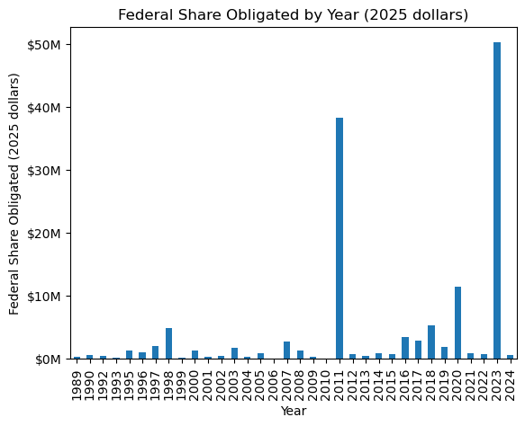
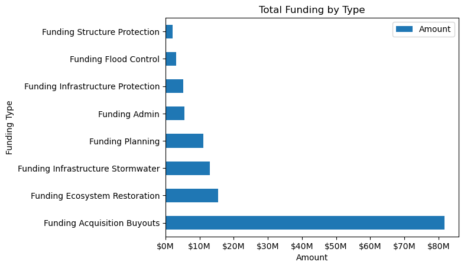
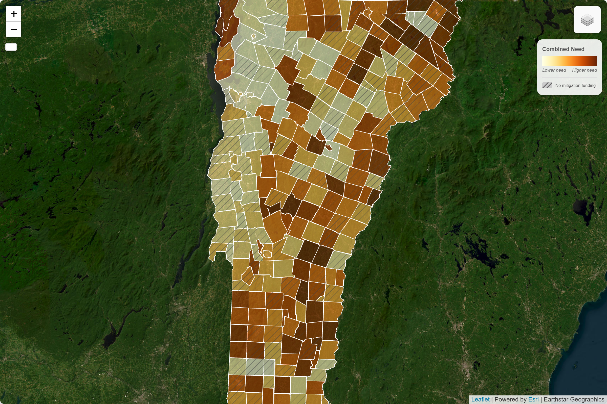
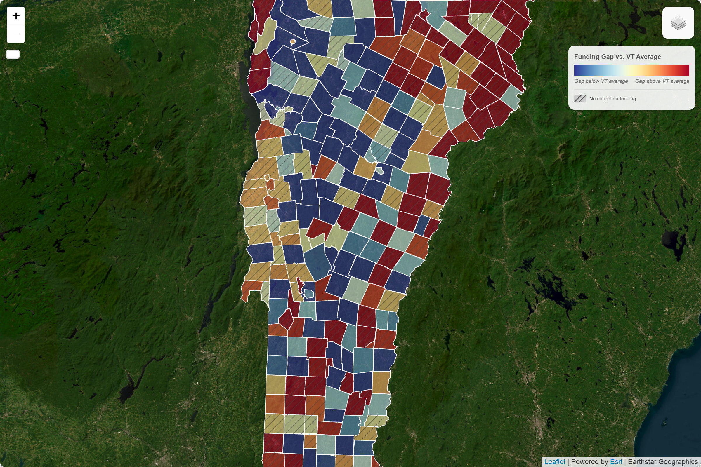
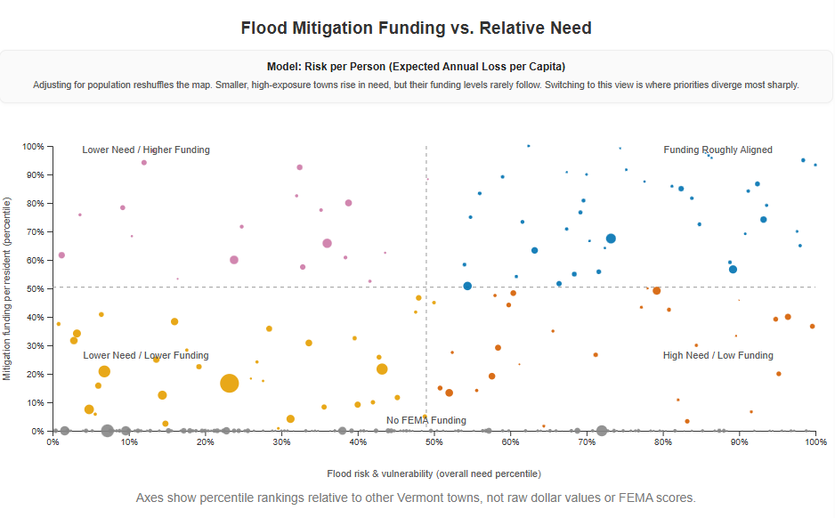
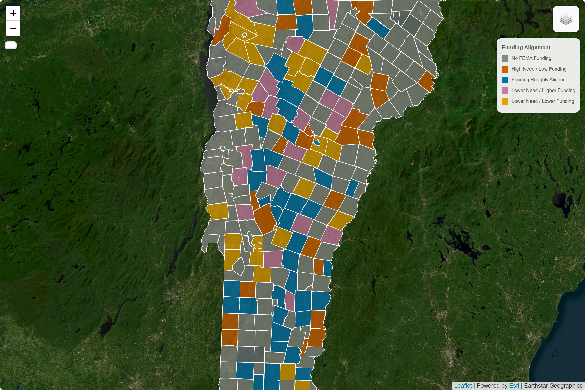

Imagine a picturesque Vermont town with a river running through it, past the quaint shops, old mills, and covered bridges. A waterway that looks ordinary on a map but, in heavy rain, returns to familiar low yards and crossings. Bennington fits that pattern: its river corridors and built edges show up repeatedly in exposure datasets. Yet the federal Hazard Mitigation Assistance (HMA) ledger records little or no HMA funding for the town.
Picture the opposite corner of the state: Newport City, nestling the shore of Lake Memphremagog, with an older and poorer population and a high vulnerability score. Like Bennington, Newport’s record shows little mitigation funding. Real places where physical exposure meets social vulnerability, and where funding outcomes feel unexpectedly absent.
This analysis is a prototype of a more statistically complex effort: a compact, readable index designed to probe a policy question that stretches far beyond Vermont. How much precision do decision‑makers need to act? Not as much as you might think. You do not need perfect models to improve outcomes; you need usable indicators paired with smarter administration. In the Vermont case, funding tracks past loss more than forward‑looking need; the index helps correct that.
Need = Risk + Vulnerability
Gap = Need - Funding
The core question
Why do some towns get mitigation funding while others do not? On the surface, the question sounds like a data problem: match exposure to dollars and you’re done — cash proportionate to need. In practice the answer is institutional. The choices we make about measurement, institutional incentives, and program rules shape the geography of protection.
Two forces determine who gets prioritized:
Measurement
What counts as “need”? Do we measure expected damage, population vulnerability, or both? In total, or per capita? The way we measure determines which places appear on a priority list.
Institutions
Programs have rules, timing, procedural hurdles, and administrative burdens. They reward towns with capacity: staff who can write grants, consultants who know the forms, and relationships with state and federal officers. Towns that have already been through a disaster cycle are more likely to have this capacity.
Measurement itself is a political and organizational act; it creates the categories that programs respond to. A town labeled “high need” on the basis of one index may be invisible under another. Institutional structure matters because programs are not neutral mechanisms that automatically target the highest‑need places; they are bureaucracies with histories, local relationships, and procedural gates. Measurement creates the map. Institutions decide which dots on that map get money.
The floods and the institutional system
Vermont has been reminded twice, loudly, in little more than a decade that its rivers can reorganize lives. In August 2011 Hurricane Irene stalled across the state: washed out bridges, tore out roads, and filled basements, leaving a residue of mud across downtowns. Twelve years later, in July 2023, a string of heavy storms again flooded downtowns and valley corridors. “Vermont Strong” felt less like a recovery slogan and more an acknowledgement of the “new normal”. These events loom in public memory and in federal programming: declared disasters both unlock emergency relief and create the political moment for mitigation.

Mitigation through HMA is designed to do what disaster relief does not: pay to prevent the next event from doing the same damage. The work is slower and, in many ways, harder: property acquisitions and buyouts, culvert upgrades, elevation and flood‑proofing projects. They take time, planning, and money. HMA projects usually need a local match, environmental reviews, and benefit‑cost analyses — financial and personnel resources a town can struggle to muster.
Yet after a big event, many towns find the resources. State and federal teams arrive; consultants and engineers come in; grant writing begins. Those relationships and skills don’t disappear when the flood recedes. In practice, the system amplifies its winners: administrative capacity, especially combined with prior disaster experience, translates into future eligibility.
Two program features are worth flagging. First, acquisition and buyouts are a major share of mitigation spending: effective but expensive and socially complicated, and they tend to follow visible disaster narratives. Second, many federal levers are tied to disaster declarations. That link channels money to places with a record of big loss, not necessarily to places with future projected harm.

The model
Need = Risk + Vulnerability
To test whether mitigation dollars align with future need, I built a simple, transparent prototype: a need index that combines two components.
- Risk: a town’s modeled exposure to flood damage, proxied by expected annual loss due to inland flooding, sourced from the FEMA National Risk Index.
- Vulnerability: a compact socioeconomic triad drawn from the American Community Survey: percent below poverty, percent elderly, and percent of households without vehicle access — proxies for a community’s ability to absorb and recover from damage.
Each component is converted into a percentile so towns are compared to one another rather than to absolute figures. Funding is measured per resident and rescaled in the same way so we can compare need and funding on the same footing. The gap between the two — need minus funding — shows where a town appears underfunded relative to its modeled need.
Gap = Need - Funding
-
Two practical points about the method: (1) Using percentiles keeps the
results communicable. A town in the 85th percentile is easier to explain
than a raw z‑score. (2) Reducing skew in funding measures (by a log
transform) makes comparisons more stable when a few towns have very
large totals.
That’s it. Need = risk + vulnerability; compare to rescaled funding; look for gaps. Deliberately simple, transparent, useful. It’s not a forecasting engine and does not capture every local nuance; it’s designed to surface broad patterns in a form usable by practitioners.
What the data shows
Put the need index on a map and familiar patterns appear: valley corridors and town centers where built assets meet streams show up repeatedly. The Connecticut River corridor, the Winooski and its tributaries in central Vermont, and pockets of the Northeast Kingdom all light up as places where physical exposure and social risk overlap.

Now layer on funding. The maps diverge. Towns with large HMA sums often match past disaster experience or administrative competence more than high modeled need. Several towns that rank very high on the need index have little or no HMA funding in their record, including Bennington and Newport from the introduction.

A scatterplot makes this clearer. Plot need rank on the x‑axis and funding rank on the y‑axis. If funding tracked need, the points would climb together; instead, there's a cloud. Across model choices the correlation between need and funding ranks sits around 0.1–0.3 — weak. By contrast, the correlation between past NFIP claims paid and HMA funding is roughly 0.5–0.6. In other words, prior claims are a better single predictor of mitigation awards than the forward‑looking composite.

A quadrant view helps make the pattern useful for policy: towns fall into categories — aligned (high need, high funding), underfunded (high need, low funding), overfunded (low need, high funding), low priority, and zero‑funded (no funding). Zero‑funded is notable: roughly half of Vermont’s towns have no recorded HMA funding, and a disproportionate share of high‑need towns are in that group.

The signal is not regionally narrow. It cuts across rural and small urban places, across the Northeast Kingdom and the southwest floodplains. The common factor is institutional: prior disaster experience and the administrative capacity to navigate grants. These are patterns, not iron laws, but they point to a persistent tendency: the system rewards the memory of past loss more reliably than projections of future harm.
Why the mismatch exists
Three interacting forces explain the pattern. Major mitigation dollars cluster after declared disasters, when political attention and funding swell around visibly affected places. The technical complexity and local‑match requirements of HMA give an edge to towns with staff, consultants, and sustained ties to state and federal officials. The cumulative effect of retained expertise and institutional networks creates a feedback loop that makes prior awardees likelier to win again.
There are subtler biases too. Benefit‑cost frameworks favor projects with quantifiable property benefits, which can disadvantage dispersed rural communities where human vulnerability is high but property density is low. Political visibility and local advocacy matter: towns that can tell a compelling, documented story about past loss are advantaged in grant competitions. Taken together, these mechanisms create a system that reacts to the recent past more readily than it anticipates the near future.
What happens next
Two policy shifts could rewire the terrain, but neither is a silver bullet. Updated Flood Insurance Rate Maps will change regulatory baselines, insurance obligations, and potentially grant eligibility, yet mapping is slow, politically contested, and only useful if agencies change eligibility and prioritization rules. Evolving federal programs and state supports (lower match requirements, dedicated technical assistance, pre‑scoped projects, and match funds) can close capacity gaps; practical levers include more staff, simpler application tracks, and proactive outreach.
Still, the main challenge is institutional: shift incentives, cut transaction costs for small towns, embed forward‑looking risk metrics, and fund the human capacity (planners, grant writers, regional teams) so places get help before disaster. Measurement is political: what we measure gets serviced. A simple, transparent ranking that flags high‑need towns, combined with targeted administrative support, can materially redirect mitigation funding. Policymakers do not need perfect models to act; they need actionable indicators joined to concrete administrative remedies.
Ending
Bennington and Newport are examples, not exceptions. Bennington did flood badly during Irene; other towns suffered more. Newport happened to miss the worst of both the 2011 and 2023 floods. Neither town is guaranteed to avoid severe flooding in the future. The pattern the data reveal is not destiny: it is a product of choices about measurement, process, and investment. We can change those choices.
This analysis is a lightweight prototype meant to clarify the shape of a policy problem, not to replace detailed local planning. The hope is simple: by making institutional geography visible, we open the door to reforms that let mitigation dollars reach places before they become emergencies. That shift from remembering the past to anticipating the future is the practical heart of resilience.
A Note on Data Limitations
The findings here are methodologically robust: the patterns hold across model specifications, normalization methods, and variable choices. But several important limitations apply:
- Town‑level aggregation obscures within‑town variation. A high need score for a town doesn't mean every neighborhood faces the same exposure.
- Funding data reflects approved grants, not applications submitted or assistance requested and denied. The gap between what was applied for and what was approved is not captured here.
- Individual town rankings should be read as approximate signals, not precise verdicts. The patterns in aggregate are where the analysis has the most confidence.
Full methodology, data sources, and code are available in the technical appendix and project repository.